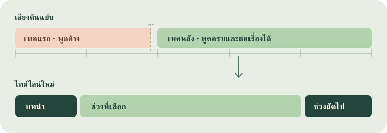

เริ่มใช้งานครั้งแรก
- เตรียมโปรเจกต์ใน CapCut ด้วยตัวเอง ตั้งชื่อให้หาเจอ นำสื่อที่จะใช้เข้า Media บันทึกงาน แล้วหยุดแก้ Timeline ระหว่างที่ AI ทำงานกับไฟล์ ถ้าเป็นงานที่แก้อยู่ ให้จดชื่อโปรเจกต์กับชื่อ Timeline ที่ต้องการไว้
- เปิดแชต Codex ใน workspace งานนี้ พิมพ์ชื่อสกิลด้วย
$ข้างหน้าในช่องแชต หากมีรายการสกิลให้เลือกชื่อที่ตรงกัน คำสั่งด้านล่างใช้พิมพ์ในแชตได้เลย หาก Codex หาไม่พบ ให้ผู้ดูแลติดตั้ง planner และ editor คู่กันจากโฟลเดอร์skills/ตามคู่มือโปรเจกต์ - เริ่มจากขอแผน คัดลอกข้อความด้านล่าง เปลี่ยนข้อความใน
[วงเล็บ]ให้เป็นข้อมูลของคลิป แล้วส่งเป็นข้อความเดียว บอกเป้าหมายเป็นภาษาที่พูดกับคนตัดต่อได้ตามปกติ
ใช้ $capcut-story-planner วางแผนอย่างเดียวสำหรับโปรเจกต์ CapCut ชื่อ [ชื่อโปรเจกต์]
คลิปนี้เป็น [แนวคลิป] คนดูคือ [กลุ่มผู้ชม] อยากให้เข้าใจ [สารหลักหนึ่งประโยค]
ปลายคลิปอยากให้คนดู [ข้อสรุปหรือสิ่งที่อยากให้ทำต่อ]
สำรวจสื่อใน Media และ Timeline เลือกประโยคที่พูดจบความ แล้วเสนอเรื่องพร้อมชื่อไฟล์และเวลาเข้า–ออกต้นฉบับ
ใช้ SOP [ชื่อหรือแนบไฟล์ SOP] และแจ้งว่าส่วนไหนยังขาด
ขอ story-plan.md และ story-plan.json สำหรับตรวจ หยุดที่แผนและห้ามเขียน draft
ทำผ่านไฟล์เท่านั้น ห้ามเปิด ปิด หรือควบคุม CapCutถ้าชื่อโปรเจกต์ซ้ำ ให้เพิ่มพาธโฟลเดอร์โปรเจกต์หรือชื่อ Timeline เพื่อยืนยันเป้าหมาย พาธคือที่อยู่ไฟล์ในเครื่อง ใช้คัดลอกจาก Finder ได้ พาธไฟล์ดิบกับพาธโปรเจกต์ใช้คนละหน้าที่ ให้ระบุว่าแต่ละอันคืออะไร
ถ้ามีแค่ไฟล์ดิบ ให้สร้างโปรเจกต์และนำไฟล์เข้า Media ด้วยตัวเองก่อน ระบุโฟลเดอร์ต้นฉบับเพิ่มเติมถ้าสื่อกระจายอยู่หลายที่ เก็บไฟล์ไว้ที่เดิมระหว่างทำงานเพื่อให้โปรเจกต์อ้างถึงไฟล์ได้
เลือกสกิลและสิ่งที่จะส่งมอบ
| สิ่งที่ต้องการ | พิมพ์เรียก | สิ่งที่ได้ |
|---|---|---|
| ยังอยากเห็นว่าจะเล่าเรื่องอย่างไร | $capcut-story-planner และ “วางแผนอย่างเดียว” | ตารางช่วงที่เลือกและไฟล์แผน พร้อมสิ่งที่ขาด |
| มีแผนที่เลือกแล้ว พร้อมตัด | $capcut-script-edit และแนบแผนหรือพาธแผน | draft ที่แก้ไขต่อใน CapCut ได้ พร้อมสำรองและผลตรวจไฟล์ |
| รู้บรีฟแล้ว อยากให้จัดเรื่องและตัดในรอบเดียว | เรียก $capcut-story-planner ต่อด้วย $capcut-script-edit และระบุ “ให้เขียน draft จริงเมื่อแผนผ่าน” | แผน หลักฐานการเลือก และ draft ที่เขียนจริงเมื่อข้อมูลพร้อม |
| มีคลิปตัดแล้ว ต้องการแก้บางจุด | $capcut-script-edit พร้อมข้อสังเกตจาก QC | draft ที่แก้จุดที่ระบุและส่วนที่กระทบตามเวลา หากต้องเลือกเทคหรือจัดเรื่องใหม่ ให้เรียก planner ก่อนด้วย |
| ปรับเฉพาะซับ | $capcut-subtitles | ซับใน draft เป้าหมายตามขอบเขตที่ระบุ |
เมื่ออยากคุมจังหวะส่งงาน ให้ระบุชัดว่าจะหยุดที่ แผน, staging หรือ เขียน draft จริง โดย staging คือสำเนาที่ใช้ตรวจการแก้ก่อนเขียนทับไฟล์โปรเจกต์เป้าหมาย ส่วน native draft คือไฟล์โปรเจกต์ที่เอาไปเปิดแก้ต่อได้ ถ้าต้องการไฟล์วิดีโอส่งลูกค้า ให้ระบุเป็นงานส่งออกแยกและตรวจการเล่นใน CapCut ด้วยตัวเอง
คู่มือโปรโมชันและปิดการขาย BOFU
ใช้กับคลิปที่ต้องการให้คนที่สนใจสินค้าเข้าใจว่าได้ข้อเสนออะไร ใช้ได้เมื่อไร และต้องไปซื้อที่ไหน ถ้าคลิปเปิดด้วยมุกหรือการทดลอง ให้เก็บเฉพาะส่วนที่ช่วยให้เข้าใจจุดเฉลยและเหตุผลซื้อ

1. เตรียมบรีฟก่อนเลือกเทค
- สินค้าและโปรเจกต์ ระบุชื่อสินค้า ชื่อโปรเจกต์ CapCut และ Timeline ที่ต้องการ ใช้ Media ของโปรเจกต์และทรัพยากรที่อนุญาต
- ข้อเสนอ ระบุราคา ส่วนลดหรือของแถม ช่วงวัน และเงื่อนไขที่ทำให้โปรใช้ได้ เก็บคำขยายอย่าง “สูงสุด” หรือ “เฉพาะในไลฟ์” ให้ติดกับข้อเสนอ
- การกระทำและช่องทางซื้อ เลือกสิ่งที่คนดูควรทำตามโปรจริง เช่น กดตะกร้าในไลฟ์ หรือเข้าไปยังช่องทางที่ระบุในบรีฟ
ถ้าคำพูดในฟุตเทจและบรีฟระบุคนละวันหรือคนละโปร ให้ชี้ว่าขัดกันตรงไหนแล้วถามก่อนเลือกช่วงขาย ตรวจช่วงอื่นต่อได้ระหว่างรอคำตอบ
2. เลือกจังหวะให้เข้ากับวัตถุดิบ
| จังหวะ | เหมาะเมื่อ | โครงเรื่อง |
|---|---|---|
| เข้าโปรไว | ฮุคและเหตุผลซื้อเข้าใจได้ในช่วงสั้น | จุดขาย → ข้อเสนอพร้อมเงื่อนไข → ชวนซื้อ |
| เก็บมุกและเหตุผลซื้อ | ต้องเห็นสถานการณ์ก่อนจึงเข้าใจมุกหรือประโยชน์ของสินค้า | ปูเรื่องและเฉลย → เหตุผลซื้อ → ข้อเสนอ → ชวนซื้อ |
3. ใช้ฟอร์มสร้างคำสั่ง แล้วตรวจแผน
- เปิด ฟอร์มโปรโมชัน BOFU กรอกบรีฟ 3 ส่วน เลือกจังหวะ แล้วเลือกว่าจะ วางแผนอย่างเดียว หรือ วางแผนและตัดจริง
- สร้างและคัดลอกคำสั่งไปวางในแชต Codex ตรวจชื่อโปรเจกต์ เงื่อนไขโปร และช่องทางซื้ออีกครั้งก่อนส่ง
- ตรวจแผนว่ามีชื่อไฟล์และเวลาเข้า–ออกของเทคที่เลือก ประโยคพูดครบ มุกยังเข้าใจได้ และคำปิดตรงกับโปร หากโปรมีหลายเทค ให้เลือกจากข้อเสนอที่ยืนยันในบรีฟ
ใช้ $capcut-story-planner วางแผนคลิปโปรโมชัน BOFU อย่างเดียว
โปรเจกต์ [ชื่อและ Timeline] สินค้า [ชื่อสินค้า]
ข้อเสนอ [รายละเอียดโปร วัน และเงื่อนไขที่ยืนยันแล้ว]
ให้คนดู [การกระทำและช่องทางซื้อ]
เลือกจังหวะ [เข้าโปรไว / เก็บมุกและเหตุผลซื้อ] แล้วเลือกเทคที่พูดครบและต่อเรื่องได้
ตรวจคำพูด ซับ และ CTA ให้ตรงกับข้อเสนอ เก็บคำขยายที่มีผลต่อความหมาย
ถ้าข้อมูลในสื่อขัดกับบรีฟ ให้ระบุจุดที่ขัดและถามก่อนเลือกช่วงขาย
ส่งลำดับเรื่อง ชื่อไฟล์ เวลาเข้า–ออก และรายการที่ต้องยืนยัน
ใช้ SOP และ preset เครื่องหมาย-อย. ที่เกี่ยวข้องกับสินค้าปัจจุบัน
หยุดที่แผน ทำผ่านไฟล์เท่านั้น ห้ามเปิด ปิด หรือควบคุม CapCut4. ตัดต่อและตรวจช่วงขายก่อนส่ง
- คำพูดและความหมาย ตัดคำผิด เทคซ้ำ และเสียงบอกบทที่ตรวจยืนยันได้ เก็บประโยคที่ช่วยให้เข้าใจมุกและเหตุผลซื้อ หากสรรพคุณยังยืนยันไม่ได้ ให้ระบุไว้ก่อนตัดสินใจใช้
- ซับและเสียงประกอบ ให้คำพูดกับข้อความบนจอสื่อโปรเดียวกัน เว้นเวลาให้คนดูอ่านวันและเงื่อนไข ใช้เอฟเฟกต์หรือ SFX เน้นจังหวะขายเท่าที่ช่วย และฟังว่าบทพูดยังชัด
- CTA และ SOP ตรวจคำปิด ช่องทางซื้อ และองค์ประกอบ
เครื่องหมาย-อย.ให้ตรงกับสินค้าปัจจุบันตาม SOP ถ้าปรับจุดตัด ให้ตรวจซิงค์ซับและเสียงอีกครั้ง - ผลส่งมอบ ก่อนเขียน draft ให้สำรองและตรวจ staging หลังเขียนให้อ่านไฟล์กลับ แล้วเปิด CapCut ดูช่วงข้อเสนอและ CTA ด้วยตัวเอง
เมื่อแก้ QC ให้ส่งเวลาใน Timeline คำที่เห็นหรือได้ยิน และสิ่งที่ต้องคงไว้ เช่น “ช่วง 00:12 ซับตกคำว่า ‘เฉพาะในไลฟ์’ ให้เติมคำนี้และคงจังหวะคำปิดเดิม”
ไปที่ฟอร์มสร้างคำสั่ง BOFU ↗1. เตรียมข้อมูลให้ AI เข้าใจโจทย์
| ข้อมูล | ตัวอย่างที่พิมพ์ได้ |
|---|---|
| โปรเจกต์และ Timeline | “โปรเจกต์ รีวิวเครื่องดื่ม A ใช้ Timeline แนวตั้ง v2” |
| ประเภทคลิปและคนดู | “รีวิวสินค้าแบบสาธิต สำหรับคนที่ยังไม่รู้จักสินค้า” |
| สารหลัก | “อยากให้คนดูเข้าใจว่าใช้ตอนไหนและต่างจากแบบเดิมอย่างไร” |
| ช่องทางและความยาว | “ลง IG Reels แนวตั้ง 9:16 เป้าหมาย 45–60 วินาที ยืดได้ถ้าต้องเก็บเงื่อนไขสำคัญ” |
| สิ่งที่ต้องเก็บ | “เก็บช่วงเปรียบเทียบ ข้อจำกัดของการทดลอง และประโยคปิดที่พูดว่า ‘ดูวิธีใช้บนฉลาก’” |
| สิ่งที่ควรตัด | “ตัดเสียงทีมงานบอกบท เทคลองพูด และการเริ่มประโยคเดิมซ้ำ เก็บคำซ้ำที่เน้นประเด็นโดยตั้งใจ” |
| ตอนจบและ CTA | “จบด้วยคำชวนดูวิธีใช้ตามที่พูดจริง ช่องทางซื้อใช้เฉพาะที่ฉันระบุหรือมีสื่อยืนยัน” |
| สไตล์และซับ | “ตัดกระชับแบบคลิปอ้างอิง ใช้ซับเลือกเน้น 1–4 คำต่อช่วง ขึ้นบรรทัดเดียว” |
| SOP และไฟล์อ้างอิง | “ใช้ SOP เครื่องหมาย-อย. ของทีม และดูไฟล์ตัวอย่างเพื่อเทียบจังหวะเปิดเรื่อง” |
สามข้อมูลที่ช่วยที่สุด คือชื่อโปรเจกต์ที่ชัด เป้าหมายหนึ่งประโยค และสิ่งที่ต้องเก็บ ถ้ายังคิดความยาวหรือสไตล์ไม่ออก บอกว่า “เสนอช่วงความยาวตามสารที่มี แล้วบอกว่าจะตัดอะไรเพื่อให้กระชับขึ้น”
ถ้ามีคลิปอ้างอิง ให้บอกว่าชอบตรงไหน เช่น การเปิด 3 วินาทีแรก การวางภาพสาธิต หรือจังหวะพักก่อนเฉลย แนบไฟล์อ้างอิงหรือให้พาธที่ AI อ่านได้ คำพูดและข้อกล่าวอ้างให้ยึดวัตถุดิบของคลิปปัจจุบัน
ตัวอย่างบรีฟที่กรอกครบ
ใช้ $capcut-story-planner วางแผนอย่างเดียวให้โปรเจกต์ สาธิตสินค้า A ใน Timeline แนวตั้ง v2
ทำคลิปสาธิตสำหรับคนที่ยังไม่รู้จักสินค้า ลง IG Reels 9:16 ประมาณ 45–60 วินาที
อยากให้เห็นวิธีเตรียมสินค้าและผลจากการลองใช้จริง ให้เปิดด้วยภาพสาธิตที่เข้าใจได้เร็ว
เก็บเงื่อนไขการทดลองที่พูดในคลิป และปิดด้วยคำแนะนำให้ดูวิธีใช้บนฉลากตามเสียงจริง
ตัดเทคเริ่มซ้ำและเสียงบอกบท ใช้ภาพกับเสียงในโปรเจกต์ และใช้ SOP preset เครื่องหมาย-อย. ของทีม
ส่งลำดับเรื่องพร้อมไฟล์ เวลาเข้า–ออก และรายการที่ยังขาด หยุดที่แผน ทำผ่านไฟล์เท่านั้น2. สำรวจสื่อและถอดเสียง
- AI อ่าน Media และ Timeline ที่ใช้งาน รวมคลิปที่นำเข้าแต่ยังไม่ได้วาง แยกคลิปพูด ภาพประกอบ เพลง และ SFX ตามเนื้อหาจริง ชื่อไฟล์ใช้ระบุไฟล์ ลำดับเรื่องให้ตัดสินจากสิ่งที่ผู้พูดและภาพสื่อ
- AI ถอดเสียงในเครื่องเป็นค่าเริ่มต้น เก็บ transcript หรือข้อความถอดเสียงพร้อมเวลาต้นฉบับ แยกจาก ซับบนจอ ที่เลือกขึ้นจริง สกิลเลือกเครื่องมือถอดตามงาน ตัวอย่างงาน QC ใช้ faster-whisper
smallและ MLX Whisperlarge-v3ตรวจเสริมเฉพาะจุด ใช้ FFmpeg ช่วยดึงเสียงและหาช่วงพัก - สำหรับเสียงทีมงานหรือเทคพูดซ้ำ ให้ AI ตรวจคำพูด ภาพ บริบท และข้อยืนยันของคุณร่วมกัน ถ้าสองเสียงทับกัน ให้ลองหาเทคสะอาดที่รักษาความหมายได้ หากยังระบุผู้พูดไม่ได้ ให้รายงานจุดสงสัยและทำส่วนอื่นต่อ
- ตรวจชื่อสินค้า ตัวเลข คำว่า “ไม่” และเงื่อนไขจากต้นฉบับก่อนใช้ ข้อความถอดอัตโนมัติอาจสะกดผิดหรือรวมการพูดสองรอบเข้าด้วยกัน ช่วงเงียบช่วยหาขอบตัดเมื่อใช้ร่วมกับคำพูดและภาพ
ใช้ $capcut-story-planner สำรวจและถอดเสียงอย่างเดียวสำหรับโปรเจกต์ [ชื่อ]
เก็บชื่อไฟล์ ช่วงเวลา คำพูด และช่วงที่ยังฟังไม่ชัด แยกสิ่งที่ยืนยันได้กับสิ่งที่คาดจาก ASR
เน้นตรวจชื่อสินค้า ตัวเลข คำปฏิเสธ เสียงทีมงานบอกบท และเทคพูดซ้ำ
ใช้การถอดเสียงในเครื่อง หากพบเสียงทับให้เสนอเทคสะอาดที่ใช้แทนได้
ส่งบัญชีสื่อและ transcript ที่เปิดอ่านได้ หยุดก่อนแก้ Timeline หรือเขียน draft3. วางเรื่องและตรวจแผน

- บอกว่าคลิปควรเปิดด้วยอะไร สารหลักที่ต้องไปถึง และตอนจบที่ต้องการ งานทดลองอาจเปิดด้วยผลที่น่าสนใจ → ตั้งโจทย์ → ให้เห็นการทดลอง → อธิบาย → สรุปหรือ CTA ตามสื่อที่มี งานรีวิวอาจเปิดด้วยปัญหา → สาธิตวิธีใช้ → แสดงผล → ชี้ข้อจำกัด → ปิดด้วยทางเลือกของคนดู
- ให้ AI เลือก ประโยคหรือประเด็นที่จบความ เปรียบเทียบเทคที่เริ่มต่างคำแต่เล่าสารเดียวกัน เก็บเทคที่ครบและเชื่อมประโยคถัดไปได้ ใช้เทคหลังเมื่อคุณภาพและความครบเหมาะสม รักษาคำปฏิเสธ คำบอกระดับ และข้อจำกัดติดกับประโยคที่เกี่ยวข้อง
- ขอให้แผนระบุ ลำดับ → ไฟล์ต้นฉบับ → เวลาเข้า–ออก → หน้าที่ → เหตุผลที่ต่อช่วงถัดไป ทุกช่วง และแยกส่วนที่ตัดออก สิ่งที่ต้องรักษา สิ่งที่ขาด และจุดยังไม่ชัด
- อ่าน
story-plan.mdจากต้นจนจบเหมือนดูคลิป เช็กว่าช่วงเปิดตั้งคำถามชัด มีคำตอบครบ คำว่า “อันนี้” หรือ “ตามภาพนี้” มีภาพหรือสิ่งอ้างถึง และตอนจบสัมพันธ์กับช่องทางจริง - ถ้าต้องแก้แผน ให้บอกตามหมายเลขช่วงในตาราง พร้อมเหตุผลและสิ่งที่อยากเก็บ ขอ
story-plan.mdและstory-plan.jsonฉบับเดียวกันก่อนส่งตัด
ใช้ $capcut-story-planner ปรับแผน [แนบไฟล์หรือระบุพาธ]
ช่วงเปิดให้ใช้ภาพผลทดลองที่เห็นชัดที่สุด แล้วค่อยเล่าเหตุผล
ช่วงที่ 4 ให้เก็บทั้งประโยคที่มีคำว่า “ขึ้นอยู่กับ…” เพราะเป็นเงื่อนไขสำคัญ
เสนอช่วงจบ 2 แบบที่มีเสียงหรือภาพรองรับ ระบุข้อดีและสารที่แต่ละแบบต้องตัดออก
ส่งแผนฉบับปรับปรุงและรอฉันเลือกตอนจบที่ขั้นแผนสำหรับคลิปสอน สัมภาษณ์ หรือคลิปที่ไม่มีบทพูด ให้บอกสิ่งที่พาคนดูไปข้างหน้า เช่น ขั้นตอนการลงมือทำ ลำดับคำถาม หรือจังหวะภาพกับเพลง แล้วให้ AI วางเรื่องตามข้อมูลนั้น
4. กำหนดซับ ภาพประกอบ และ SOP
- ซับเต็ม เหมาะกับงานที่ต้องการให้อ่านตามบทพูด เลือกภาษาซับ ระบุชื่อเฉพาะ และบอกว่าช่วงใดต้องเก็บถ้อยคำครบ
- ซับเลือกเน้น เหมาะกับคลิปที่เน้นสารบนจอทีละจุด สำหรับงานที่เลือกโปรไฟล์แฮมแฮงค์ ให้ใช้ 1–4 คำ สูงสุด 5 คำ และ keyword หนึ่งคำ ซับหลักกับ keyword ใช้หนึ่งบรรทัดและตำแหน่งเดียวกัน โปรไฟล์ระบุ DB Med2 สีแบรนด์
#FF8000และสีเน้น#FF3A3Aหมายเหตุ SOP แยกจากเพดานคำของซับ - ภาพประกอบ เพลง และเอฟเฟกต์ บอกหน้าที่ให้ชัด เช่น “สลับไปภาพฉลากตอนพูดถึงวิธีใช้” หรือ “ให้เสียงพูดเด่นกว่าเพลง” ระบุไฟล์หรือแทร็กที่อนุญาต ถ้ามี preset หรือสไตล์ต้นแบบ ให้บอกชื่อและตำแหน่งที่อยู่ในโปรเจกต์เพื่อให้ AI ตรวจทรัพยากรจริง
- เครื่องหมาย-อย. เป็นรายการบังคับสำหรับงานทดลองและขายสินค้าของทีม ใช้ preset
เครื่องหมาย-อย.จาก สื่อ → ของคุณ → ค่าล่วงหน้า ค้นผ่านไฟล์บนดิสก์และใช้ชุดองค์ประกอบที่ตรงกับสินค้าปัจจุบัน ถ้ามี instance ถูกต้องอยู่แล้ว ให้รักษาไว้ ถ้าหาไม่ได้หรือข้อมูลสินค้าไม่ตรง ให้คงรายการ “ยังขาด” ในแผน งานแฮมแฮงค์ใช้ข้อกำหนดเฉพาะจาก SOP ของสินค้านั้นเพิ่มเติม
เพิ่มบรีฟซับและกราฟิกสำหรับโปรเจกต์ [ชื่อ]
ใช้โปรไฟล์ hamhang-selective-captions.json ตามงานนี้ ให้ซับหลักและ keyword ขึ้นบรรทัดเดียวที่ตำแหน่งเดียวกัน
ใช้ “ทั้งวันทั้งคืน” เป็นตัวอย่างตำแหน่งเฉพาะเมื่อพบ cue นี้ใน draft เป้าหมาย ถ้าไม่มี ให้ใช้ต้นแบบที่ฉันระบุ [ชื่อซับหรือช่วงเวลา]
เก็บหมายเหตุ SOP ครบ ใช้ preset เครื่องหมาย-อย. สำหรับสินค้าปัจจุบัน และแจ้งรายการที่ยังตรวจหรือใส่ไม่ได้
ใช้ภาพประกอบจาก [ไฟล์หรือรายการที่อนุญาต] เมื่อช่วยอธิบายสิ่งที่พูด5. สั่งตัดจริง
เมื่อมีแผนที่ตรวจแล้ว
ใช้ $capcut-script-edit ตัดโปรเจกต์ [ชื่อและ Timeline] ตามแผน [แนบไฟล์ story-plan.json หรือระบุพาธ]
ใช้ draft ล่าสุดของโปรเจกต์นี้และตรวจช่วงต้นฉบับที่แผนอ้างอีกครั้ง
ให้เขียน native draft จริงเมื่อ staging ผ่าน สำรองและตรวจว่า draft ล่าสุดไม่เปลี่ยนก่อนเขียน
เก็บ [ประโยคปิด/CTA/กราฟิก/SOP] และซิงค์ซับ เพลง SFX ตามจุดตัดใหม่
ทำผ่านไฟล์เท่านั้น ห้ามเปิด ปิด หรือควบคุม CapCut
ส่งพาธ draft สำรอง ความยาวจริง รายการแก้ และผลอ่านไฟล์กลับหลังเขียนเมื่ออยากวางแผนและตัดในครั้งเดียว
ใช้ $capcut-story-planner แล้วส่งต่อ $capcut-script-edit ในรอบเดียว
โปรเจกต์ [ชื่อ] Timeline [ชื่อ] เป็นคลิป [ประเภท] สำหรับ [คนดูและแพลตฟอร์ม]
สารหลักคือ [หนึ่งประโยค] เป้าหมายความยาว [ช่วงเวลา] และจบด้วย [CTA หรือประโยคปิดที่มีจริง]
สำรวจ Media และ Timeline ถอดเสียงในเครื่อง เลือกเทคที่จบความ ตัดเสียงบอกบทและเทคซ้ำที่ตรวจยืนยันแล้ว
ใช้ SOP [ชื่อ] กับซับแบบ [เต็ม/เลือกเน้น] คง [รายการที่ต้องรักษา] และใช้สื่อที่ฉันอนุญาต
เก็บแผนพร้อมชื่อไฟล์และเวลา แล้วเขียน native draft จริงเมื่อข้อมูลและ staging ผ่าน
สำรอง ตรวจ fingerprint ก่อนเขียน และอ่านผลกลับ ทำผ่านไฟล์เท่านั้น ห้ามควบคุม CapCut
ส่งแผน พาธ draft และสำรอง ผลตรวจไฟล์ กับรายการที่ยังต้อง QC ในแอประหว่างตัด AI ตรวจว่ากำลังแก้โปรเจกต์และ Timeline ที่ระบุ เก็บสำรอง ตรวจ staging เปรียบเทียบ fingerprint หรือค่าตรวจเวอร์ชันไฟล์ก่อนเขียน และอ่านผลจากดิสก์กลับ ถ้าคุณบันทึกการแก้เพิ่มระหว่างทาง ให้แจ้งว่า “ฉันเพิ่งแก้และบันทึก Timeline แล้ว ให้โหลด draft ล่าสุดและจับคู่เวลาใหม่”
ถ้าอยากตรวจสำเนาก่อน ให้เปลี่ยนประโยคอนุญาตเขียนเป็น “ทำ staging และส่งผลตรวจ หยุดก่อนเขียน draft จริง” ถ้าเริ่มคลิปใหม่ ให้เตรียมโปรเจกต์หรือต้นแบบที่มีโครงสร้างให้ตรวจในเครื่องก่อน แล้วระบุว่าจะให้แก้โปรเจกต์ใด หาก Codex ขอสิทธิ์เขียนไฟล์ ให้ดูชื่อโปรเจกต์และตำแหน่งในคำขอให้ตรงกับงานที่สั่ง
6. รับงานและตรวจใน CapCut
- อ่านสถานะที่ AI รายงานก่อนเปิดงาน แผนพร้อม หมายถึงมีแผนให้ตรวจ staging ผ่าน หมายถึงสำเนาสำหรับตรวจผ่านเกณฑ์ที่ระบุ เขียน draft และอ่านกลับแล้ว หมายถึงตรวจไฟล์โปรเจกต์เป้าหมายหลังเขียนได้ ให้เทียบชื่อโปรเจกต์กับพาธที่ส่งมาทุกครั้ง
- หลังงานเขียนเสร็จ เปิด CapCut ด้วยตัวเองและเปิดโปรเจกต์เป้าหมาย เล่นตั้งแต่ต้นจนจบหนึ่งรอบ แล้วฟังซ้ำเฉพาะจุดที่มีการตัด ย้าย หรือแทนเทค
- จดสิ่งที่พบลงตาราง QC ด้านล่าง หากจะส่งออก ให้ทำหลังตรวจการเล่นจริง โดยเฉพาะเอฟเฟกต์ การตัดบรรทัด และเสียงมิกซ์
| จุดตรวจ | สิ่งที่ควรดูหรือฟัง |
|---|---|
| เปิดคลิป | เข้าเรื่องเร็วและเห็นหรือได้ยินสิ่งที่ชวนดูต่อ |
| ลำดับเรื่อง | คำถามมีคำตอบ มีภาพรองรับคำว่า “ตามภาพนี้” และไม่เสียเงื่อนไขสำคัญ |
| รอยตัดและเสียง | ต้นประโยคและท้ายคำครบ ไม่มีเสียงบอกบทหรือรอบลองพูดซ้ำ เสียงพูดได้ยินชัด |
| ซับ | ชื่อสินค้า ตัวเลขและคำปฏิเสธถูก อ่านทัน ซับหลักกับ keyword ไม่ซ้อน และขึ้นบรรทัดตามบรีฟ |
| SOP | เครื่องหมายและหมายเหตุอยู่ครบ ถูกสินค้า อ่านได้ และไม่บังภาพสำคัญ |
| ตอนจบ | CTA และเสียงปิดครบตามที่ตกลง ไม่มีคัตหรือเสียงที่ค้างหลังจบโดยไม่ตั้งใจ |
ผลอ่านไฟล์กลับช่วยยืนยันว่าโปรเจกต์ตรงกับแผน ส่วนการเล่นในแอปช่วยตรวจว่าคนดูได้ยินและเห็นอย่างที่ตั้งใจ ถ้าเห็นว่ายังไม่ครบ ให้ส่งข้อสังเกตเป็นช่วงเวลาเพื่อแก้ต่อ
7. พิมพ์คำสั่งแก้ QC ให้ตรงจุด
ใช้รูปแบบ เวลา → สิ่งที่ได้ยินหรือเห็น → สิ่งที่ต้องการ → สิ่งที่ต้องเก็บ ระบุว่าเวลาเป็นของ Timeline ฉบับที่ดูหรือของไฟล์ต้นฉบับ หากแสดง 00:00:25:06 ช่องท้ายคือเลขเฟรม ให้ AI ตรวจ FPS ของงานและย้อนหาขอบคำจริง เพราะเวลาที่จดอาจชี้กลางประโยค
ใช้ $capcut-story-planner แล้วให้ $capcut-script-edit แก้โปรเจกต์ [ชื่อ] จาก draft ล่าสุด
เวลาต่อไปนี้อ้างจาก Timeline [ชื่อหรือเวอร์ชัน] ที่ฉันเพิ่งดู
- 00:00:25:06 ได้ยิน “ทุกครั้งหลังดื่มเขาจะกินอะไร” เป็นรอบเริ่มซ้ำ เก็บบทนำคนเกาหลี แล้วเข้ารอบที่พูดครบใกล้ 00:00:28:55
- ช่วง CTA มีคำขึ้นต้นซ้ำ ใช้รอบที่พูดประโยคของแท้ครบ ตรวจต้นคำจากต้นฉบับ และเก็บคำชวนกดซื้อกับเสียงปิดที่ตกลงไว้
ตรวจกรณีคล้ายกันในช่วงที่เลือกทั้งคลิป คงซับ สี และ SOP ตามบรีฟ
ให้เขียน native draft จริงหลังสำรอง ตรวจ staging และตรวจ fingerprint
ส่งก่อน–หลังของแต่ละจุด และบอกว่าต้องเปิดฟังจุดไหนอีก ทำผ่านไฟล์เท่านั้น ห้ามควบคุม CapCutตัวอย่างด้านบนใช้โครงจาก QC ของ “กินเหล้าทั้งวัน” ให้เปลี่ยนเวลาและคำพูดให้ตรงงานที่จะสั่ง ถ้าบอกว่า “ซับยาวไป” ให้เพิ่มเกณฑ์ที่วัดได้ เช่น “ช่วง 00:18–00:24 ย่อเหลือไม่เกิน 5 คำต่อช่วง เก็บคำว่า ‘อาจ’ และใช้หนึ่งบรรทัด”
แก้เฉพาะซับ
ระบุโปรเจกต์และชุดซับที่ต้องการแก้ หรือใช้ ฟอร์มสร้างคำสั่งทำซับ เพื่อเลือกว่าจะเพิ่มแทร็กใหม่หรือแก้ชุดเดิม
ใช้ $capcut-subtitles แก้ซับที่แทร็ก [ชื่อ] ในโปรเจกต์ [ชื่อและ Timeline]
ช่วง [เวลา Timeline] แก้คำว่า [เดิม] เป็น [ใหม่] ให้ซับตรงเสียงและอ่านทัน
คงฟอนต์ สี ตำแหน่ง และหมายเหตุ SOP ตามต้นแบบใน draft นี้
ขอบเขตแก้เฉพาะซับชุดนี้ รักษาภาพ เสียง และความยาวของ Timeline
ให้เขียน draft หลังสำรองและตรวจ staging ผ่านไฟล์เท่านั้น แล้วส่งรายการที่แก้ขอให้ตรวจอย่างเดียว
ใช้ $capcut-script-edit ตรวจอย่างเดียวจาก draft ล่าสุดของโปรเจกต์ [ชื่อและ Timeline]
เทียบกับแผน [พาธ] ตรวจเสียงปิด รอยตัดจาก source mapping ซับ SOP และสื่อที่หาไม่เจอ
ส่งตาราง เวลา / สิ่งที่พบ / หลักฐาน / จุดที่ฉันต้องเปิดดูหรือฟัง
หยุดที่รายงานและห้ามเขียน draft ทำผ่านไฟล์เท่านั้น8. ทำซ้ำกับคลิปถัดไป
เมื่อ QC ผ่าน ให้บันทึกกติกาที่อยากใช้ซ้ำ เช่น จังหวะเปิด แบบซับ ความดังของเสียงพูด หรือวิธีใช้ preset ส่วนชื่อไฟล์ เวลา เทคที่ต้องตัด และประโยคปิดให้เก็บแยกตามแต่ละคลิป เมื่อนำโปรไฟล์ไปใช้กับงานใหม่ ให้ระบุชื่อโปรไฟล์และสิ่งที่เปลี่ยนจากเดิม
ใช้ $capcut-script-edit สรุปวิธีตัดที่ฉันเพิ่ง QC ผ่านเป็น workflow สำหรับซีรีส์ [ชื่อ]
เก็บจังหวะเล่า วิธีเลือกเทค รูปแบบซับ ภาพประกอบ เสียง และเกณฑ์ SOP ที่ใช้ซ้ำได้
แยกชื่อไฟล์ เวลา และข้อมูลสินค้าเฉพาะคลิปไว้ในบันทึกงาน
ส่งพาธโปรไฟล์และตัวอย่างคำสั่งเรียกใช้กับคลิปใหม่ตัวอย่างการเรียกใช้ครั้งถัดไปคือ “ใช้โปรไฟล์ซีรีส์ [ชื่อหรือพาธ] กับโปรเจกต์ [ชื่อใหม่] รอบนี้เปลี่ยน CTA เป็น [คำปิดใหม่] และตรวจสื่อกับเวลาใหม่ทั้งหมด”
เมื่อเจอปัญหา ให้ส่งข้อความแบบนี้
| อาการ | สิ่งที่ควรพิมพ์ต่อ |
|---|---|
| AI หาโปรเจกต์ผิด | “ใช้โปรเจกต์ที่พาธนี้ [พาธ] และ Timeline [ชื่อ] ช่วยยืนยันชื่อและพาธก่อนเขียน” |
| หาไฟล์ดิบไม่เจอ | “ไฟล์ [ชื่อ] ย้ายไปที่ [พาธ] ช่วยตรวจว่าอ้างไฟล์ถูกและอัปเดตแผนก่อนตัด” |
| ฟังชื่อสินค้าหรือคำปิดผิด | “คำที่ถูกคือ [คำ] อยู่ใน [ไฟล์และเวลา] ช่วยเทียบต้นฉบับแล้วปรับแผนและซับตามหลักฐาน” |
| เลือกเทคแล้วขาดหัวหรือท้ายประโยค | “ช่วง [เวลา] ตัดหัวคำว่า [คำ] ให้ย้อนหาต้นประโยคจริง แล้วเก็บข้อความจนจบที่ [คำ]” |
หา เครื่องหมาย-อย. ไม่เจอ | “ตรวจ preset จากไฟล์หรือ instance ที่อยู่ในโปรเจกต์นี้ แจ้งทรัพยากรที่ยังขาดและคงรายการใน SOP” |
| เปลี่ยน Timeline ระหว่างที่ AI ทำงาน | “ฉันบันทึกเวอร์ชันใหม่แล้ว ให้โหลด draft ล่าสุด จับคู่ source กับ Timeline ใหม่ และตรวจ staging อีกครั้งก่อนเขียน” |
| ระบบอ่าน draft ไม่ได้หรือไฟล์ถูกล็อก | “ขอแผนและรายการสิ่งที่ขาดก่อน ระบุไฟล์ที่อ่านไม่ได้และข้อมูลที่ฉันต้องเตรียมให้เพื่อทำต่อ” |
| เปิดดูแล้วต่างจากรายงานไฟล์ | “ฉันเล่นใน CapCut แล้วพบ [อาการ] ที่ [เวลา] ใช้ผล QC นี้เทียบกับ draft ล่าสุดและรายงานว่าปรับอะไรได้” |
ไฟล์ที่ควรรู้จัก
| ไฟล์หรือคำ | ใช้ตอนไหน |
|---|---|
inventory.json | ตรวจว่า AI พบสื่ออะไรและไฟล์อยู่ที่ไหน |
story-plan.md | อ่านแผนและให้ฟีดแบ็กตามช่วง |
story-plan.json | ส่งแผนพร้อมชื่อไฟล์และเวลาให้ editor ใช้ต่อ |
transcript | ตรวจข้อความและเวลาที่อ้างจากเสียงต้นฉบับ |
caption-cues.json | ตรวจว่าซับข้อความไหนขึ้นเมื่อไร |
| สำรองก่อนเขียน | ย้อนตรวจเวอร์ชันเดิม ระบุเวอร์ชันเป้าหมายและให้ตรวจงานล่าสุดก่อนสั่งกู้ |
| รายงาน staging และ read-back | ตรวจผลก่อนและหลังเขียน ดูหัวข้อที่ยังต้องเปิดดูหรือฟังในแอป |
ชื่อไฟล์รายงานอาจต่างกันตามงาน ขอให้ AI ส่งลิงก์ของไฟล์จริงในข้อความส่งมอบ